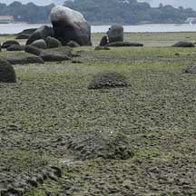
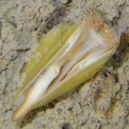
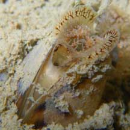
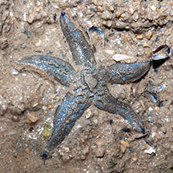

|
|
| bivalves text index | photo index |
| Phylum Mollusca > Class Bivalvia > Family Mytilidae |
| Nest
mussel Arcuatula senhousia Family Mytilidae updated May 2020 Where seen? This tiny mussel appears to be seasonal on our Northern shores. Sometimes, it is very common, forming spongy carpets over vast areas of the shore near the low water mark, as well as on large boulders. At other times, it is not seen at all. It was previously called Muscuslita senhousia. It is described as an opportunistic species characterised by fast growth and unique ability to colonise both hard and soft surfaces. On hard surfaces, it settles among other creatures that live there. On soft surfaces, the little mussels weave their byssal threads into an all-enclosing nest forming dense mats that can hold more than 2,000 individuals in one square metre. These mats rapidly change sandy bottoms into mud flats as they retain silt. Colonies fluctuate widely and unpredictably. |
 Mats coating boulders and the ground. Pulau Sekudu, Dec 07 |
 These tiny mussels can form vast mats. Chek Jawa, Aug 07 |
 Pulau Sekudu, Jul 07 |
| Features: 1-2cm long. The two-part
shell is thin, fragile and smooth. These tiny mussels build communal
'nests' out of byssal threads incorporating sediments, bits of broken
shells and other debris. Large areas can be covered in such 'nests',
pockmarked with little slits, each housing one mussel. These can carpet
rocks or soft bottoms. Sometimes confused with Little black mussels which are also small, but black and while they may also produce a kind of 'nest', this is not as thick and spongy as the mats created by the Nest mussels. |
 Pasir Ris, Feb 09 |
 |
| Friends and enemies: Sometimes, small Green mussels (Perna viridis) are seen growing among the tinier nest mussels. Animals seen on the mussels include Drills, Sand stars, flatworms: possibly eating them? Several times, Hairy spoon seagrass were seen growing on nest mussel beds. |
|
 Plain sand star seen on a nest mussel bed. Pasir Ris, Feb 09 |
| Human uses: These mussels are considered pests where they establish themselves outside their natural range, e.g., in New Zealand and California. They probably arrived as larvae carried in the ballast water of ocean-going ships. In China and Thailand, they are an inexpensive food and also used to feed poultry, shrimp and fish. |
| Nest mussels on Singapore shores |
On wildsingapore
flickr
|
Links
References
|